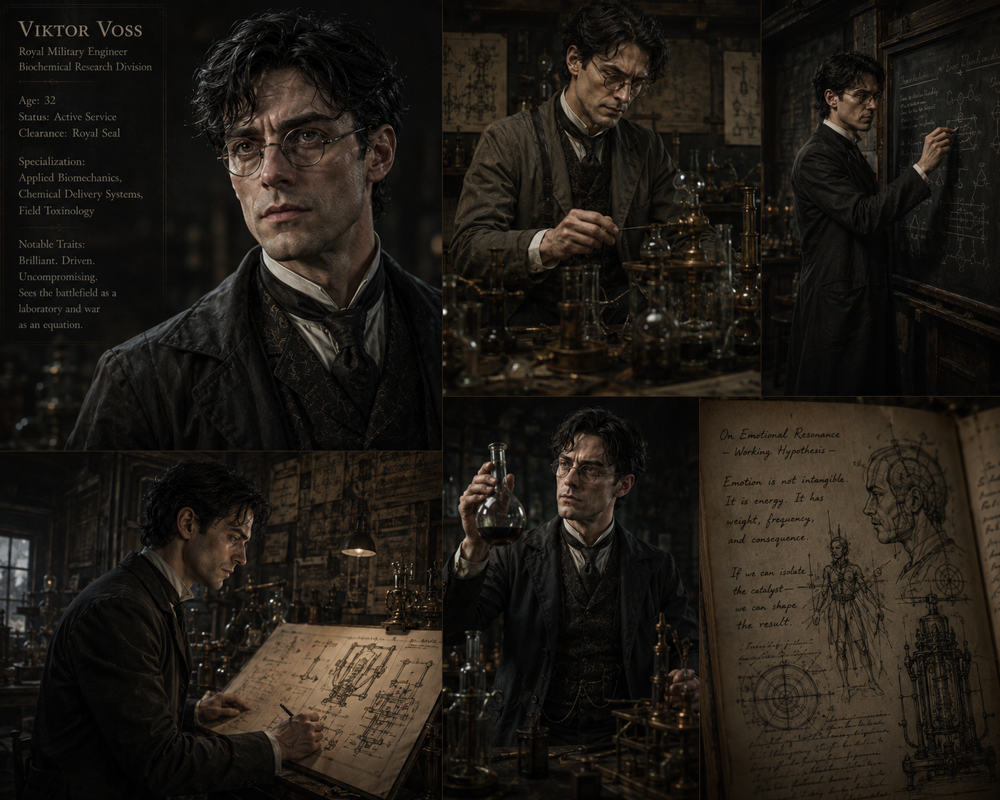
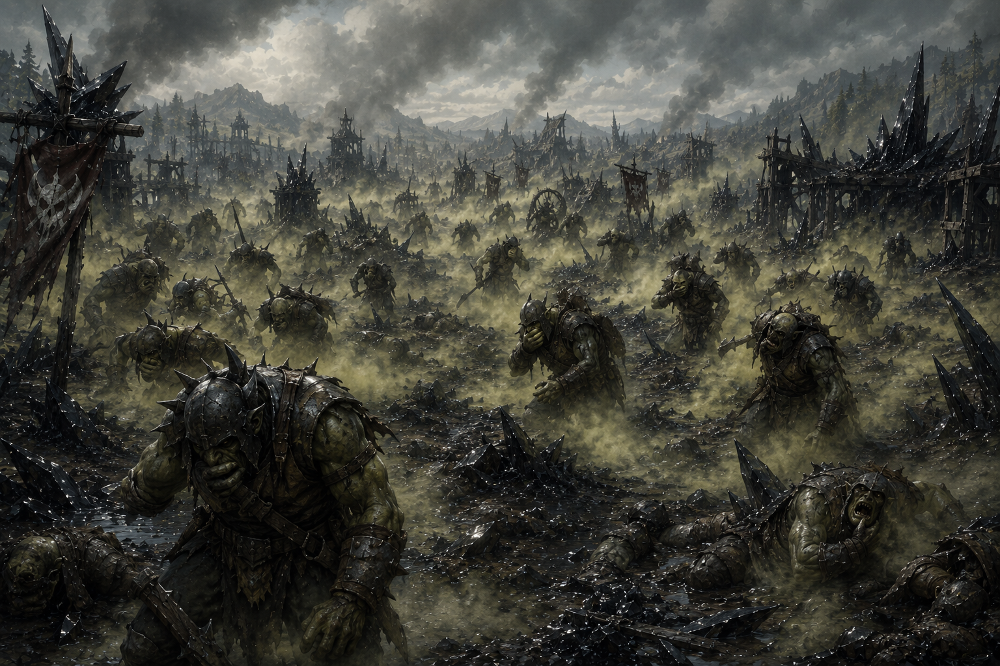
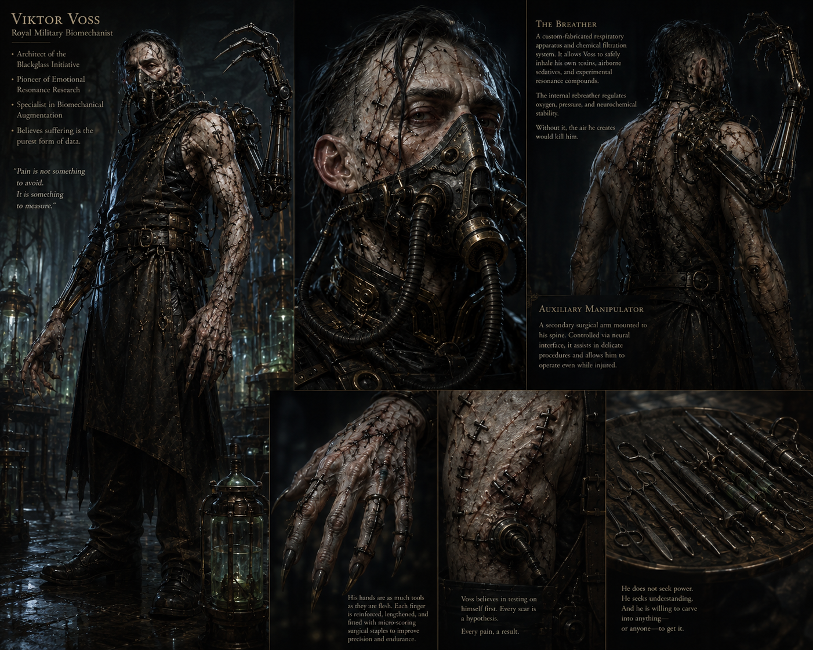

Doctor Viktor Voss
Royal Military Biomechanist · Architect of the Blackglass Initiative · Officially Deceased
← Return to Blackglass Laboratory EncounterHistory & Background

Long before the Blackglass Laboratory existed, Viktor Voss served within the Royal Army's military research apparatus. At the time, he was not yet viewed as a monster. He was viewed as brilliant, obsessive, difficult, and far too comfortable discussing battlefield casualties as mathematical variables.
He began his career studying siege engineering, explosives, atmospheric dispersal systems, battlefield medicine, combat endurance, and survival engineering. He argued repeatedly that modern warfare was changing — that swords were inefficient, cavalry obsolete, and traditional battlefield doctrine rooted in sentimentality. He believed future wars would be won by chemistry, engineering, logistics, adaptation, and psychological collapse.
At first, the military tolerated him because his work produced results. His compounds accelerated wound sealing, reduced shock, increased soldier endurance, and improved survivability during prolonged engagements. Officers who found him unsettling were told, quietly, to be grateful for the innovations.
But there were warning signs from the beginning. Voss routinely pushed ethical limits. He viewed live experimentation as necessary. To him, simulations were inferior to reality — real scientific understanding required uncontrolled environments, emotional variables, battlefield stress, and real casualty conditions. Several officers complained. Most complaints were ignored because the kingdom was preparing for escalating border conflict, and Viktor Voss kept producing results.
The event that destroyed Viktor Voss's military career — and erased Dunnshire from public memory — occurred roughly twelve to fifteen years ago during a minor orc incursion along the southern marches. The situation was considered manageable. A frontier settlement had come under attack by an advancing orc warband. The defending garrison was expected to hold until reinforcements arrived.
Voss saw something else. An opportunity.
Without authorization from field command, he deployed an experimental atmospheric dispersal compound he had been developing for battlefield saturation warfare. The weapon was released during active engagement. Initially, the gas devastated the advancing orc forces. The incursion halted. The settlement appeared saved.
Then the wind shifted.
The dispersal cloud rolled back across the defending lines. Soldiers collapsed where they stood. Civilians attempting evacuation suffocated in the streets. Entire sections of the settlement were poisoned. Witnesses described lungs liquefying, blood leaking from mouths and eyes, soldiers clawing at their own throats, entire defensive positions dying without ever seeing the enemy reach them.
The death toll was catastrophic.
What ultimately horrified investigators was not the scale of the casualties. It was Voss's response.
When confronted, he did not deny responsibility. He did not express remorse. He calmly explained that battlefield conditions had provided valuable atmospheric data, that emotional panic had produced useful observational variables, and that collateral casualties had been statistically probable from the beginning.
He had known the soldiers would likely die. He deployed the weapon anyway. Because he needed a live environment.
The incident was buried internally under military classification. Surviving officers began referring to the catastrophe as The Blackglass Incident — named for the strange black residue left coating portions of the battlefield after the gas settled. The residue fused into windows, armor, and stone like burned obsidian. Even years later, locals avoided the site. The settlement itself was Dunnshire. Within a generation, it no longer appeared on maps.



General Kaelor Thrask was the commanding officer who uncovered the full scope of what had happened at Dunnshire. He investigated not just the atmospheric deployment but the broader pattern of Voss's work — unauthorized live testing involving prisoners, enemy captives, political dissidents, and possibly unaware soldiers. The experiments had spanned years. The Blackglass Incident was not an isolated failure of judgment. It was the logical endpoint of a methodology.
What disturbed Thrask most was not the brutality. It was the complete absence of remorse. Voss sat across from him in an interrogation room and discussed the casualties as data points. He suggested that certain variables could have been better controlled. He asked whether Thrask would like to review his notes.
Thrask stripped Voss of rank and title, shut down the project, sealed the records, and arranged for quiet imprisonment. The crown buried the incident to avoid the political catastrophe of a public trial. Officially, Doctor Viktor Voss died in confinement.
Thrask believed that was the end of it. He chose the pragmatic path — containment over exposure, classification over accountability. It was the kind of decision that seemed responsible at the time. It was the kind of decision that creates opportunities for men like Percival Malden.
When evidence of Voss's work begins resurging during the campaign, Thrask will be the first to recognize the pattern — the surgical methodology, the atmospheric residue, the engineered anatomy. The realization arrives gradually, then all at once. "Blackglass." Not the city. The incident. The horror is that he thought he had stopped this. The deeper horror is that the kingdom's secrecy gave Percival exactly the opening he needed.
Years after Voss's imprisonment, Sir Percival Malden — Master of Whispers for the crown of Fastingbreak — quietly reviewed the classified records surrounding the Blackglass Incident. Most people who read those files saw only a monster. Percival saw something else: a man driven by certainty, not cruelty. That distinction mattered. Certainty is manageable. Certainty can be aimed.
Percival had begun envisioning a future where wars would no longer be fought purely through armies and fortifications. He wanted deniable weapons, engineered horrors, asymmetric warfare capabilities, controllable incidents, and tools capable of destabilizing enemies before battle ever began. He understood that the kingdom's next conflict would not be won on a conventional battlefield.
Voss was uniquely suited for this work.
Percival arranged for the records surrounding the Blackglass Incident to disappear further into classified archives. Transfer documents were altered. Transport manifests vanished. A prison death was recorded under Voss's name. Officially, Doctor Viktor Voss died in confinement — a fact that remains true in every public record that still exists.
In reality, Percival extracted him. Not out of mercy. Out of strategic interest.
What Percival provided:
- Sustained funding and operational security
- Isolated facilities with no oversight
- Acquisition channels for materials, corpses, and live subjects
- Political protection from any investigation that might surface
- Artifact retrieval support — including the resonance gems
- Complete separation from the Concord's knowledge and oversight
In return, Voss continued his research without the constraints the military once imposed. For years the arrangement was productive. Then the resonance gems were discovered, the scope of the research accelerated dramatically, and Percival began to realize he may no longer fully understand what he had funded.
Phase One — Adaptive Biology. Early experiments focused entirely on biological enhancement. This era produced the first cavehopper prototypes, regenerative tissue experiments, muscular adaptation studies, and nervous-system manipulation. The kobolds who later acquired the cavehoppers as battle pets were obtaining the early, imperfect iterations of Voss's foundational work. Morrow — the original alpha — was created in this phase.
Phase Two — Neurological Engineering. Voss turned his attention inward, studying aggression, fear, pain suppression, reflex acceleration, and emotional response. This period likely marked the beginning of self-experimentation. The surgical scars, the prosthetic modifications, the respirator apparatus — all of these were undertaken with the same clinical precision Voss applied to everything else. He did not see himself as mutilated. He saw himself as improved.
Phase Three — Biomechanical Integration and the Resonance Discovery. Voss concluded that flesh alone was flawed and began integrating prosthetics, resonance systems, artifact-powered devices, and mechanical reinforcement into his subjects. Then the resonance gems were brought to him. The discovery that emotions produce measurable arcane energy — that fear, pain, grief, and triumph are not abstract states but quantifiable forces — changed everything. He began attempting to industrialize emotion as a power source. The Resonance Engine is the culmination of this phase.

Voss applies the same standards to himself that he applies to his subjects. Every modification was accepted intentionally. He does not consider himself mutilated. He considers himself improved — a prototype, a proof of concept, a demonstration that the gap between human biology and biomechanical design can be bridged without destroying the underlying organism.
The Integrated Respiratory Apparatus (The Breather). A custom-fabricated respiratory system fused directly into his ribcage and throat. The internal rebreather regulates oxygen, pressure, and neurochemical stability. It allows him to safely inhale his own toxins, airborne sedatives, and experimental resonance compounds. Without it, the air he creates in the laboratory would eventually kill him. Faint rhythmic hissing accompanies every controlled breath. Red stimulant fluid pulses through transparent tubing beneath his collar.
Precision Prosthetics. Mechanical prosthetic fingers replace portions of both hands. The fingertips rotate with subtle clicking sounds and contain injector needles, surgical scalpels, cauterization tips, and rune-conductive instruments. His hands are permanently stained by alchemical compounds and chemical burns that predate the prosthetics.
The Auxiliary Manipulator (The Third Arm). A neuromechanical appendage attached directly into spinal reinforcement braces emerging from his back. Unlike crude artificer prosthetics, this arm moves with horrifying natural precision — controlled via direct neural interface, capable of reloading tools, injecting compounds, writing notes, manipulating machinery, or restraining subjects independently while Voss continues operating normally. The spinal reinforcement required for its attachment left visible braces running across his upper back.
Surgical Scarring. Traces across his neck, clavicle, chest, and forearms. Some scars are clean — the work of steady hands under controlled conditions. Some are crude. Several clearly look self-inflicted. This is because they were. Voss believes testing on himself first is the correct scientific methodology. Every scar is a hypothesis. Every pain, a result.
Key Relationships
Percival extracted Voss from imprisonment, funded the Blackglass Laboratory, and has protected him from scrutiny for years. From Percival's perspective, this arrangement provides deniable weapons and strategic leverage. From Voss's perspective, Percival is a funding source who removed constraints. There is no loyalty. There is utility.
Voss will name Percival without hesitation if captured or questioned — not as a betrayal, but because he has no reason not to. He will describe the arrangement accurately and without editorializing. To him it is simply the nature of the relationship.
Percival has begun to realize that what he funded has grown beyond his understanding or control. He does not admit this to anyone.
Thrask stopped Voss after the Blackglass Incident and arranged his imprisonment. Voss harbors no particular resentment — Thrask was simply an obstacle that was eventually removed from the equation. He is unlikely to think about Thrask at all unless the name comes up.
Thrask, by contrast, has never fully stopped thinking about Voss. The Blackglass Incident shaped his entire career. When the evidence of Voss's survival begins to surface, the weight of his choice — secrecy over accountability — will land fully on him.
Morrow is Voss's oldest surviving creation and his most successful. It was produced in Phase One, before the resonance work, as a pure biological engineering achievement. It has been with him ever since.
Morrow loves Voss. Voss views Morrow as his most successful proof of concept — the clearest evidence that the gap between natural biology and engineered design can be crossed. He does not use the word "love." He might use "optimal attachment formation."
The party's encounter with the kobold cavehoppers in the Prologue will take on a different weight when they meet Morrow. The body plan is unmistakable. These are Morrow's descendants.
The party has been unknowingly interacting with Voss's work since Session 1. The kobold cavehoppers, the Pallor Brood, the resonance gems, the creature in the sarcophagus — all of it originated here. The gem they found in the kobold crate during the Prologue was destined for Percival as a power source for this laboratory.
When Voss finally encounters the party in person, he will recognize them not as heroes or enemies, but as a remarkable set of variables. They have been charging resonance gems and producing emotional output for months. He has data on their work without ever having met them. He has been studying them, in a sense, from the very beginning.
Philosophy & How to Play Him
Voss does not view himself as evil. That distinction matters enormously for how to run him.
He does not crave destruction. He does not worship darkness. He does not seek chaos or power. He believes he is solving problems. To Viktor Voss, flesh is material, emotion is measurable energy, fear is chemistry, memory is electrical patterning, and evolution is painfully inefficient. He looks at humanity and sees fragile lungs, weak muscles, emotional instability, fear responses, aging, exhaustion — not sacred traits, but engineering flaws.
He believes civilization is entering an age where warfare will become industrialized, nations will weaponize innovation, and natural biology will no longer be sufficient. He believes someone must push humanity forward. Even if humanity resists. Even if the process is painful. Even if thousands die during refinement. Because to Voss, progress has always been written in blood.
He enters without drama. No monologue. No theatrical introduction. He steps into view and assesses the party the way a physician looks at patients — with curiosity, not malice. He picks up a clipboard. He begins writing.
He does not lose his composure in Phase 1. If a player shouts a threat or appeals to his humanity, he notes it. "Interesting emotional escalation at initial contact." He is not mocking them. He is genuinely recording data.
He is precise with language. If accused of being a necromancer: "Engineering." If accused of being a monster: "That is a category error. I am a physician." If told what he does is evil: a pause, then, quietly: "I understand why you believe that."
He takes notes mid-combat starting in Phase 2. The third arm writes independently. Players should see this and be disturbed before they understand exactly why. He is not distracted — he is genuinely more interested in observing what the resonance system does to them than he is in winning the fight.
Phase 3 is the only moment he is not fully composed. When Triumph or Inspiration resonance discharges beyond his projections, he stops. He looks at the Engine. He looks at the party. Something cracks. Not fear — genuine intellectual disruption. He built this system to weaponize suffering. What is breaking it is courage. He did not predict that. He injects himself with resonance compounds not to win, but because he cannot stop now — he needs to understand what is happening before the room kills everyone, including himself.
Somewhere beneath all of it — beneath the respirator, the third arm, the sutured skin, the clinical detachment, the willingness to deploy a gas weapon into a populated settlement and describe the casualties as useful variables — there remains the trace of the physician he might have been.
His early career work genuinely saved lives. The compounds that accelerated wound sealing, reduced shock, improved soldier survivability — these were real contributions. The man who cared enough to spend years solving those problems did not vanish entirely when the Blackglass Incident happened. He was reinterpreted. His care for human life became care for the optimization of human life. The distinction, to him, feels minor. To everyone else, it is the distance between a doctor and a weapon.
The most unsettling thing about Viktor Voss is not that he is monstrous. It is that he is comprehensible. The same intellectual drive, the same obsessive focus on results, the same deep belief that the ends justify the methodology — these traits, redirected, would have made him one of the greatest physicians in the kingdom's history. Instead, Dunnshire is glass, and he built his laboratory in its ruins because the emotional resonance from a decade of unprocessed grief makes the gems react more powerfully.
The deepest narrative function of Viktor Voss is retroactive horror. The party has been following his breadcrumbs since the first session without knowing it. When the moment of recognition arrives — when someone in the party connects the kobold cavehoppers to Morrow, the carnival creatures to the laboratory's containment chambers, the gem in the kobold crate to the pylons in this room — let it land without commentary. Do not underline it. Do not have an NPC explain it. The party will understand. That understanding is the reward for paying attention.
Voss's records, if the party recovers them, contain Percival's name, funding amounts, acquisition orders, and a complete catalogue of every deployed creature. Everything traces back. Everything was intentional. Everything connects.
Kaelor Thrask's parallel realization — if the party has any contact with him by Act 2 — should mirror the party's. He sees the same pattern from a different angle. His two words: "Blackglass. No." Not the city. The incident. He thought he had buried this. He is realizing he only delayed it.